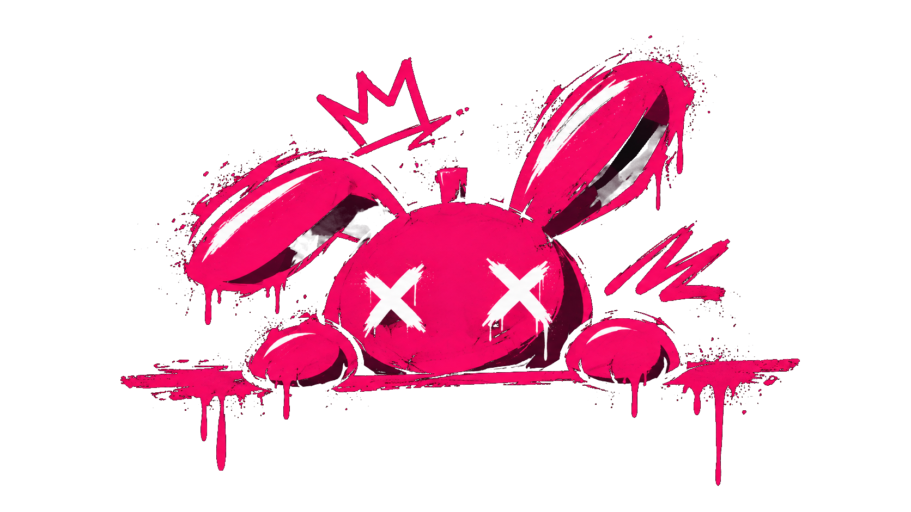
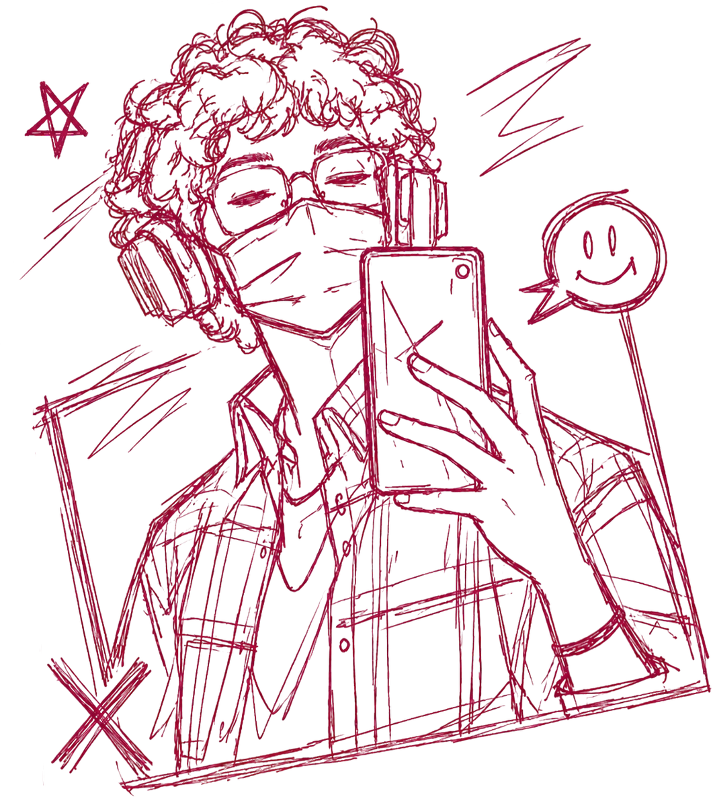
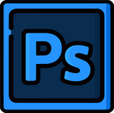
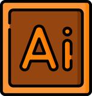
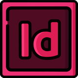
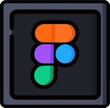
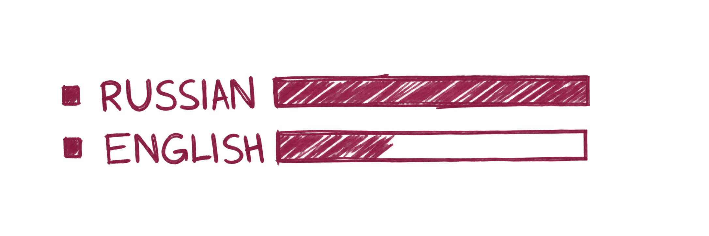

Графический дизайнер
Дизайн карточек товаров для сайта.

Превращаю идеи в визуальные истории.
И даю им жизнь.

С 2022 года занимаюсь графическим дизайном. За это время освоила композицию, типографику, цветовую гармонию и работу со стилем. Понимаю, как визуал должен решать задачу, и всегда ищу в каждом элементе смысл.
Работала над учебными и личными проектами: айдентика, постеры, обложки, контент для соцсетей. Постоянно слежу за трендами, развиваю навыки. Открыта к реальным проектам, чтобы расти как специалист и создавать качественный продукт.
Дизайн карточек товаров для сайта.
Съёмка мероприятий и портретов.
Создание карточек и визуальных материалов.
Графический дизайн.
Композиция, типографика, цвет, айдентика, digital-дизайн. Практика и современные подходы.




Photoshop · Illustrator · InDesign · Figma · Lightroom

Логотипы, стиль и визуальные системы
Создание постеров и обложек для книг и журналов
Типографика, оформление страниц и подготовка к печати
Создание сайтов, UI/UX-дизайн, карточки товаров и контент для соцсетей
Превью для YouTube, шапки, аватарки и оформление соцсетей
Портреты и съёмка мероприятий
Посмотрите подробнее о моём проекте Reform.
Проект, вопрос или просто «привет».
Давай начнём с одного сообщения.